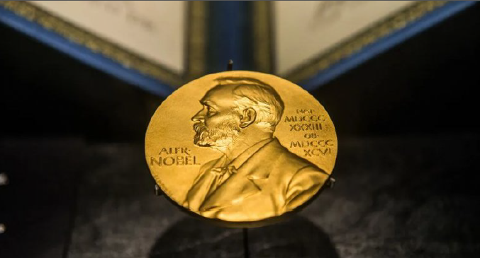
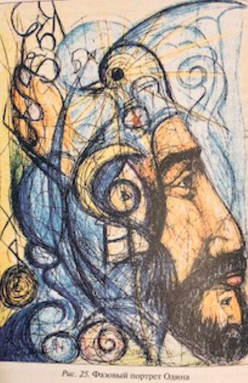
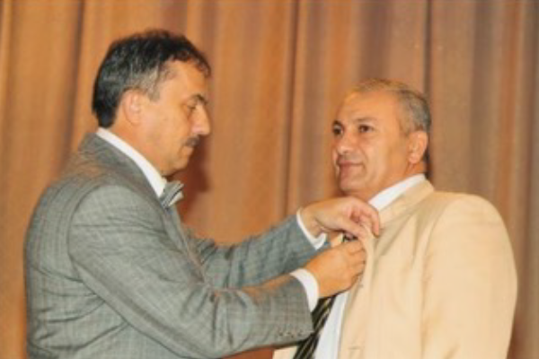

Уважаемый Доктор Яшар!

С огромной душевной радостью поздравляем Вас с Днём рождения! Примите наши самые искренние поздравления и выражение глубокой признательности за Ваш вклад в развитие мировой науки! В Вас удивительным образом соединились самые разные таланты и достоинства: дар настоящего учёного и крупного организатора науки и образования — с богатым жизненным опытом практической работы и житейской мудростью, государственная масштабность замыслов и свершений — с умением найти подход к каждому человеку, высокая требовательность и организованность — с доброжелательностью и душевной теплотой. Вы всегда открыты для всех, кто нуждается в Вашем совете, помощи и поддержке. Вы — великий ученый! А быть ученым — это значит быть терпеливым, вдумчивым человеком, обладающим невероятным запасом знаний, эрудицией, умением анализировать, сопоставлять, принимать альтернативные решения и зачастую не принадлежать себе. Ведь наука требует колоссальных затрат времени и сил. От всей души желаем Вам крепкого здоровья! Пусть Ваши научные изыскания принесут большую пользу обществу, а Вам подарят огромное моральное удовлетворение, благополучие, уважение и радость!
Яшару Ибадову посвящается
Касанием пера по простору бумаги, Как взмахом крыла по своду небес Он — полон полета, он — полон отваги, Рождает вновь символы Божьих чудес! Ответом зеркальным рисует картины, Портреты людей, городов и стихий, Гармонией меря альтернативной Привычную алгебру правил Земных. Психограф, ученый, новатор, наставник Служение Богу и людям избрал. С секретом рождения радуг и Тайны Он Образ Материи Новой создал. Ключ Жизни откроет Путь к Духу и Силе, Подарит здоровье, любовь и покой, А если кому-то нужна психургия, Ею Доктор избавит от боли любой! Ян-Инь совершенство наполнит живое, Графический космос расширит предел, И Код мироздания в жизни любого Раскроется Лотосом ангельских дел.. Славинская Н.С.

Azərbaycandan Nobel mükafatına onlar namizəddir - ÖZƏL - FOTO
Alfred Nobelin vəsiyyəti əsasında baş tutan və 1901-ci ildən bəri keçirilən Nobel mükafatı kimya, fizika, fiziologiya və tibb, ədəbiyyat, iqtisadiyyat və sülh üzrə verilir.
6 nominasiyanın hər biri üzrə 3 nəfərə verilən bu mükafatın məbləği isə təxminən bir milyon dörd yüz min ABŞ dollarına bərabərdir. Hər il bir çox ölkə, o cümlədən Azərbaycan mükafatın nominasiyaları üzrə öz namizədlərini təqdim edir.
Beynəlxalq Nobel İnformasiya Mərkəzinin vitse-prezidenti, elmlər doktoru Bəybala Ələsgərov builki namizədlərlə bağlı Ölkə.Az-ın suallarını cavablandırıb.
O bildirib ki, bu il Azərbaycandan 5 nəfərin namizədliyi irəli sürülüb:
"Bu il 5 nəfər namizədimiz var. Qafqaz müsəlmanlarının XII Şeyxülislamı və Qafqaz Müsəlmanları İdarəsinin sədri Allahşükür Paşazadə sülh mükafatı üzrə namizəd göstərilib. Bundan əlavə, tibb sahəsi üzrə namizədimiz tibbi biologiya elmləri doktoru, professor Yaşar İbadov, kimya üzrə kimya elmləri doktoru Adil Qəribov, fizika üzrə isə Bakı Dövlət Universitetinin Fizika fakültəsinin professoru, fizika-riyaziyyat elmləri doktoru Sərhəddin Abdullayevdir.
B.Ələsgərov daha bir nəfərin isə ədəbiyyat üzrə namizədliyinin təqdim edildiyini bildirib:
"Bu, yeni kadrdır. Nobel nizamnaməsinə əsasən İlk dəfə namizəd göstərilən şəxsin adı açıqlanmır. Biz onun adını yalnız 3-4 ildən sonra deyə bilərik, amma hələlik gizli saxlanılır.
Adı açıqlanmasa da, onu deyə bilərik ki, fransız ədəbiyyatında Şərq mövzusu üzrə tədqiqatlar aparıb".
Billurə Yunus Allahşükür Paşazadə Yaşar İbadov Sərhəddin Abdullayev Adil Qəribov
Волшебство Жизни
Каждому из нас приходилось удивляться: как гармоничен и прекрасен мир, созданный Творцом! Как разумны законы природы! И с какой щедростью и отеческой любовью наделил Создатель человека способностью познавать эти законы, выступать Его со-работником, со-творцом!..
Волшебство Жизни проявляется во всем! В том числе и в творчестве человека, его способности учиться, расти духовно, обретать Мастерство.
Однажды в статусе Доктора Яшара Ибадова, в WhatsApp, появилась статья на азербайджанском языке и изображение знаменитой медали с профилем Нобеля.
Мне очень захотелось узнать, что в этой статье написано о Яшаре Ибадове. Конечно, все мы знаем, что Нобелевская премия, учрежденная в 1901 году по завещанию Альфреда Нобеля, – почетная и желанная награда для любого ученого. Она присуждается в области химии, физики, физиологии или медицины, литературы, экономики и мира. Сумма данной премии, вручаемой 3 людям в каждой из 6 номинаций, составляет около одного миллиона четырехсот тысяч долларов США. Ежегодно многие страны, в том числе и Азербайджан, представляют своих кандидатов на соискание премии. Также нам, соратникам и ученикам Яшара Ибадова, хорошо известно, как ценят уважаемого Доктора на родине — и далеко за ее пределами — за вклад в медицину и инновационные здоровьесберегающие технологии.
Я спросила, «О чем говорится в этой статье, Доктор?», он ответил: «Здесь говорится о том, что от Азербайджана 5 человек являются кандидатами на Нобелевскую премию. И я один из них». Я с огромной радостью поздравила Доктора с этим замечательным событием!
И вот дальше началось волшебство. То самое волшебство Жизни, которое раскрывается через духовный дар Человека.
«Один из пяти — это несомненно сам доктор Яшар»!».... Эта фраза Вам что-нибудь напоминает? – спросил Доктор.
Да, и правда! Это же фраза Василия Павловича Гоча! Слово в слово! И память, и сердце осветились воспоминанием.

Это было в феврале 2003 года в Баку, когда академик Василий Павлович Гоч предложил Доктору Яшару Ибадову получить фазовый портрет Одина, основателя рунического алфавита и письменности. В процессе рисования фазового портрета Одина прояснились важные сведения о самом Одине и его исторической связи c академиком В.П. Гочем, создателем нового рунного языка. Удивительно, не зная рунического алфавита, Доктор Яшар нарисовал несколько рунических букв на ФП Одина. «Одна из этих букв «Мэтр», что означает «мастер». Её графика вместе с цифрой 5 перед нею означает «5 мастеров». «Рука Бога проявляет 5 мастеров, одним из которых, несомненно, является и сам Доктор Яшар! Честь и хвала, поздравляю Вас», — сказал Василий Павлович». (Яшар Ибадов, Психография, 2007)

Автор Росликова Е.В.